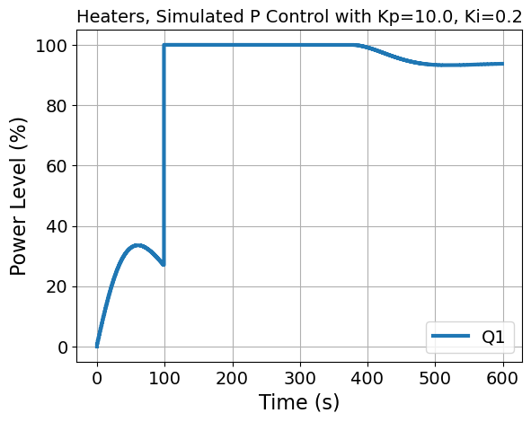
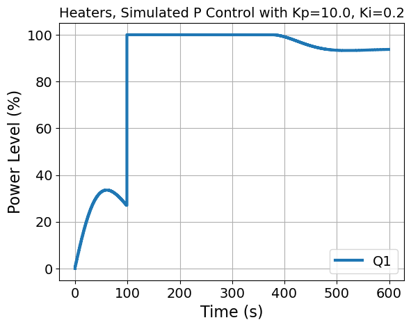

3.10. Analysis of Velocity-Form Bumpless PI Controller#
# Set default parameters for publication quality plots
import matplotlib.pyplot as plt
SMALL_SIZE = 14
MEDIUM_SIZE = 16
BIGGER_SIZE = 18
plt.rc('font', size=SMALL_SIZE) # controls default text sizes
plt.rc('axes', titlesize=SMALL_SIZE) # fontsize of the axes title
plt.rc('axes', labelsize=MEDIUM_SIZE) # fontsize of the x and y labels
plt.rc('xtick', labelsize=SMALL_SIZE) # fontsize of the tick labels
plt.rc('ytick', labelsize=SMALL_SIZE) # fontsize of the tick labels
plt.rc('legend', fontsize=SMALL_SIZE) # legend fontsize
plt.rc('figure', titlesize=BIGGER_SIZE) # fontsize of the figure title
plt.rc('lines', linewidth=3)
3.10.1. Closed-Loop Dynamics#
We start with the velocity form of the controller:
(3.40)#\[\begin{equation}
u_k = u_{k-1} + K_p (-y_k + y_{k-1}) + K_I \underbrace{(y_{SP} - y_f)\Delta t}_{e_k}
\end{equation}\]
Next, divide by \(\Delta t\):
(3.41)#\[\begin{equation}
\frac{u_k - u_{k-1}}{\Delta t} = -K_p \frac{(y_k - y_{k-1})}{\Delta t} + K_I e_k
\end{equation}\]
Consider limit as \(\Delta t \to 0\):
(3.42)#\[\begin{equation}
\dot{u} = -K_p \dot{y} + K_I e_k
\end{equation}\]
Next, consider the two-state model for a single TCLab channel:
(3.43)#\[\begin{align}
C_p^H \frac{dT^*_{H,1}}{dt} &= -U_a T^*_{H,1} + U_b (T^*_{S,1} - T^*_{H,1}) + \alpha P_u \\
C_p^S \frac{dT^*_{S,1}}{dt} &= U_b (T^*_{H,1} - T^*_{S,1})
\end{align}\]
Next, substitute the control law:
(3.44)#\[\begin{equation}
\frac{du}{dt} = -K_p \dot{T}^*_{S,1} + K_I (T^*_{set} - T^*_{S,1})
\end{equation}\]
Finally, subsitute the second differential equation:
(3.45)#\[\begin{equation}
\frac{du}{dt} = -K_p \frac{U_b (T^*_{H,1} - T^*_{S,1})}{C_p^S} + K_I (T^*_{set} - T^*_{S,1})
\end{equation}\]
Now, we can write the model as a linear system:
(3.46)#\[\begin{equation}
\underbrace{\begin{bmatrix}
\dot{T}_{H,1} \\
\dot{T}_{S,1} \\
\dot{u}
\end{bmatrix}}_{\mathbf{\dot{x}}} =
\underbrace{\begin{bmatrix}
-\frac{U_a + U_b}{C_p^H} & \frac{U_b}{C_p^H} & \frac{\alpha P_i}{C_p^H} \\
\frac{U_b}{C_p^S} & -\frac{U_b}{C_p^S} & 0 \\
-\frac{K_p U_b}{C_p^S} & \frac{K_p U_b}{C_p^S} - K_I & 0
\end{bmatrix}}_{\mathbf{A}}
\underbrace{\begin{bmatrix}
T_{H,1}^* \\
T_{S,1}^* \\
u
\end{bmatrix}}_\mathbf{x} +
\underbrace{\begin{bmatrix}
0 \\
0 \\
K_I
\end{bmatrix}}_\mathbf{B}
\underbrace{\begin{bmatrix} T^*_{set} \end{bmatrix}}_\mathbf{u}
\end{equation}\]
(3.47)#\[\begin{equation}
\underbrace{\begin{bmatrix} T^*_{S,1} \end{bmatrix}}_\mathbf{y} =
\underbrace{\begin{bmatrix}
0 & 1 & 0
\end{bmatrix}}_\mathbf{C}
\underbrace{\begin{bmatrix}
T_{H,1} \\
T_{S,1} \\
u
\end{bmatrix}}_\mathbf{x} +
\underbrace{\begin{bmatrix} 0 \end{bmatrix}}_{\mathbf{D}}
\underbrace{\begin{bmatrix} T^*_{set} \end{bmatrix}}_\mathbf{u}
\end{equation}\]
3.10.2. Simulation#
import numpy as np
# parameters
T_amb = 21 # deg C
alpha = 0.00016 # watts / (units P1 * percent U1)
P1 = 100 # P1 units
U1 = 50 # steady state value of u1 (percent)
# fitted parameters (see previous lab) for hardware
'''
Ua = 0.0261 # watts/deg C
Ub = 0.0222 # watts/deg C
CpH = 1.335 # joules/deg C
CpS = 1.328 # joules/deg C
'''
# fitted parameters (repeat Lab 3) for TCLab digital twin
Ua = 0.05 # watts/deg C
Ub = 0.05 # watts/deg C
CpH = 5.0 # joules/deg C
CpS = 1.0 # joules/deg C
t = np.arange(0, 600, 1)
T_set = np.ones(t.shape)*5
T_set[100:] = 30
plt.step(t, T_set + T_amb, linestyle='-.', color='black', alpha=0.5)
plt.xlabel('Time [second]')
plt.ylabel('Setpoint [° C]')
plt.show()

3.10.2.1. Continuous Simulation#
3.10.2.2. Discrete Simulation#
import pandas as pd
from scipy.signal import cont2discrete
def tclab_simulate_bumpless_PI(Kp = 1.0, Ki = 0.05, verbose=False, plot=True):
''' Simulate the TCLab system with PI control
Arguments:
Kp: the proportional control gain
Ki: the integral control gain
verbose: print matrices, default is False
plot: create plots, default is True
Returns:
data: DataFrame with columns for Time, T1, T2, Q1, Q2
'''
n = len(t)
assert len(T_set) == n, 'Setpoint array must have the same length as time array'
# Original open loop state space model
A = np.array([[-(Ua + Ub)/CpH, Ub/CpH], [Ub/CpS, -Ub/CpS]])
B = np.array([[alpha*P1/CpH], [0]])
C = np.array([[0, 1]])
D = np.array([[0]])
Ad, Bd, Cd, Dd, dt = cont2discrete((A, B, C, D), dt=1, method='zoh')
# Initialize state matrix
X = np.zeros((n, 2))
# Initialize input matrix
U = np.zeros((n, 1))
prev_error = 0
# Loop over time steps
for i in range(n):
# Current state
x = X[i, :]
# Unpack into individual states
T1H, T1S = x
error = T_set[i] - T1S
if i > 0:
dt = t[i] - t[i-1]
U[i,0] = U[i-1,0] + Kp*(error-prev_error) + dt*Ki*(error)
# Limit the power levels
U[i, 0] = max(0, min(100, U[i, 0]))
# Update state
if i < n-1:
# Do not update the state for the last time step
# We want to update U and SP for plotting
X[i + 1, :] = Ad @ x + Bd @ U[i, :]
prev_error = error
# Shift states from deviation variables to absolute values
X += T_amb
# Create DataFrame
data = pd.DataFrame(X, columns=['T1H', 'T1S'])
data['Time'] = t
data['Q1'] = U[:, 0]
data['SP1'] = T_set + T_amb
if plot:
plt.title('Channel 1, Simulated P Control with Kp={}, Ki={}'.format(Kp,Ki))
plt.step(data['Time'], data['T1H'], label='T1H', linestyle='--')
plt.step(data['Time'], data['T1S'], label='T1S', linestyle='-')
plt.step(data['Time'], data['SP1'], label='SP1', linestyle='-.', color='black', alpha=0.5)
plt.ylabel('Temperature (C)')
plt.xlabel('Time (s)')
plt.legend()
plt.grid()
plt.show()
plt.title('Heaters, Simulated P Control with Kp={}, Ki={}'.format(Kp,Ki))
plt.step(data['Time'], data['Q1'], label='Q1')
plt.xlabel('Time (s)')
plt.ylabel('Power Level (%)')
plt.legend()
plt.grid()
plt.show()
return data
tclab_simulate_bumpless_PI(Kp=10.0, Ki=0.2)
 

| T1H | T1S | Time | Q1 | SP1 | |
|---|---|---|---|---|---|
| 0 | 21.000000 | 21.000000 | 0 | 0.000000 | 26.0 |
| 1 | 21.000000 | 21.000000 | 1 | 1.000000 | 26.0 |
| 2 | 21.003168 | 21.000078 | 2 | 1.999203 | 26.0 |
| 3 | 21.009442 | 21.000384 | 3 | 2.996071 | 26.0 |
| 4 | 21.018754 | 21.001055 | 4 | 3.989146 | 26.0 |
| ... | ... | ... | ... | ... | ... |
| 595 | 50.984636 | 50.990960 | 595 | 93.702318 | 51.0 |
| 596 | 50.984699 | 50.990653 | 596 | 93.707256 | 51.0 |
| 597 | 50.984772 | 50.990365 | 597 | 93.712069 | 51.0 |
| 598 | 50.984857 | 50.990094 | 598 | 93.716757 | 51.0 |
| 599 | 50.984952 | 50.989841 | 599 | 93.721319 | 51.0 |
600 rows × 5 columns
3.10.3. Stability Analysis#
# Eigendecomposition analysis
from scipy.linalg import eig
import numpy as np
def calc_eig(Kp, Ki, verbose=True):
"""Calculates the eigenvalues and eigenvectors of the A_PI matrix.
Args:
Kp: Proportional gain.
Ki: Integral gain.
verbose: If True, prints the eigenvalues and eigenvectors.
Returns:
A numpy array containing the eigenvalues.
"""
A_PI = np.array([[-(Ua + Ub)/CpH, Ub/CpH, alpha*P1/CpH],
[Ub/CpS, -Ub/CpS, 0],
[-Kp*Ub/CpS, Kp*Ub/CpS - Ki, 0]])
w, vl = eig(A_PI)
if verbose:
for i in range(len(w)):
print("Eigenvalue",i,"=",w[i])
print("Eigenvector",i,"=",vl[:,i],"\n")
return w
calc_eig(1.5, 0.01)
Eigenvalue 0 = (-0.057644127570114174+0j)
Eigenvector 0 = [ 0.09164288 -0.59943323 0.79516124]
Eigenvalue 1 = (-0.009404448645463076+0j)
Eigenvector 1 = [-0.5969477 -0.73523783 0.32105883]
Eigenvalue 2 = (-0.0029514237844228087+0j)
Eigenvector 2 = [0.40304171 0.42832509 0.80876139]
array([-0.05764413+0.j, -0.00940445+0.j, -0.00295142+0.j])
Kp_range = np.arange(0.1,10,0.1)
Ki_range = np.arange(-3,0.1,0.1)
xv, yv = np.meshgrid(Kp_range, Ki_range)
# store eigenvalues in 3D array
s3 = (len(Ki_range),len(Kp_range),3)
s2 = (len(Ki_range),len(Kp_range))
ev = np.zeros(s3, dtype=complex)
positive_real_eig = np.zeros(s2)
nonzero_imag_eig = np.zeros(s2)
small_number = 1E-9
for i in range(len(Ki_range)):
for j in range(len(Kp_range)):
ev[i,j,:] = calc_eig(xv[i,j], np.power(10,yv[i,j]), verbose=False)[:]
positive_real_eig[i,j] = sum(np.real(ev[i,j,:]) >= -small_number)
nonzero_imag_eig[i,j] = sum(np.abs(np.imag(ev[i,j,:])) >= small_number)
plt.figure()
fig, axs = plt.subplots(1,2, sharey=True)
axs[0].set_box_aspect(1)
cs = axs[0].contourf(xv,yv,positive_real_eig, levels=100)
axs[0].set_xlabel('$K_P$')
axs[0].set_ylabel('log$_{10}$($K_I$)')
axs[0].set_title('Count Re($\lambda_i$)$>0$')
axs[1].set_box_aspect(1)
cs = axs[1].contourf(xv,yv,nonzero_imag_eig, levels=100)
axs[1].set_xlabel('$K_P$')
#axs[1].set_ylabel('log$_{10}$($K_i$)')
axs[1].set_title('Count Im($\lambda_i$)$≠0$')
cbar = fig.colorbar(cs, ticks=[0, 2], orientation='horizontal', ax=axs[:])
#plt.tight_layout()
plt.show()
<Figure size 640x480 with 0 Axes>